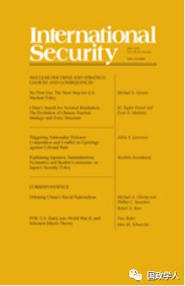

收录于合集

简 介
【作者】 帕特里克·波特（Patrick Porter），伯明翰大学国际安全与战略系教授，同时也是英国皇家联合军种研究所的高级副研究员，他主要研究权力和观念在美国、英国的国防、外交政策制定中的作用。
【 编辑】 邢 戎
【校对】 黄运涛、刘孝玉
【审核】 丁伟航
【来源】 International Security, Vol. 42, No. 4 (Spring 2018), pp. 946.https://www.mitpressjournals.org/doi/abs/10.1162/isec_a_00311
** 【 期刊 】** 《国际安全》（International Security）是国际和国家安全领域的同行评议学术期刊。它成立于1976年，由哈佛大学贝尔弗科学与国际事务中心(Belfer Center for Science and International Affairs at Harvard University)编辑，麻省理工学院出版社(MIT Press)每年出版四次。2017年影响力因子为4.135，在“国际关系”类别的85种期刊中排名第2位。

为何美国的外交大战略如此稳定？ ****
——权力、习惯与美国外交政策的制定
Why America’s Grand Strategy Has Not Changed:
Power, Habit, and the U.S. Foreign
Policy Establishment
帕特里克·波特（Patrick Porter）
内容提要
为什么二战后美国的外交大战略能持续至今？早在苏联解体之前，美国就形成了追求“首要性”（Primacy），即全球领导权的外交大战略，这一战略构筑了美国战略界历次大辩论的基本框架。战略有四个相互关联的部分:保持军事优势、安抚和遏制盟友、使他国融入美国主导的世界体系和国际市场中，以及防止核武器的扩散。事实证明，这些基本的安全承诺很难改变。
学界对这一现象有不同观点： 一些人强调国际结构的驱动，认为正是权力优势和单边主义使得超级大国超越地区边界来主导国际事务；另一些人则将国内因素和观念的作用考虑在内。
本文认为是 权力与习惯的相互作用使美国外交战略保持稳定。 “权力”指的是一个国家相对的经济体量和军事能力；“习惯”指从那些看似不证自明实则未经检验的假设中得到的的集体观念。物质力量使美国追逐世界霸权与领先地位，而习惯则使得这一战略具有稳定性。正是那些担忧“美国安全秩序的崩塌”的官员和专家们形成了一个稳固而富有影响力的精英集团，始终秉持着美国首要的信念。
文章导读
**
**
美国外交政策制定与权力、习惯的互动关系 ▲▲▲
习惯是一种路径依赖，它限制了当今政策制定者的选择范围，即使假设条件已不复存在，决策者仍会倾向于遵循历史惯例。二战结束以来，美国在各领域建立的强大实力优势，使“首要性”这一政策制定习惯牢固树立。这种外交政策制定的习惯也催生了一个稳固的精英阶层，其主导着从战后西欧经济复兴、北约建立到国家经济委员会成立的全过程，通过各种特权机制支配着美国政届，秉持着抗拒改变的思维，阻碍了战略转向。只有满足两种条件美国外交战略才会发生根本转变：一是外部条件的迅速变化足以推翻对现状的假设，二是有足够的国内力量来承担推动变革的成本。因此，重大战略变革是罕见的。
**保持军事优势（ Preponderance）、确保联盟体系（Reassurance）、促进经济一体化（Integration）和控制核武器扩散（Nuclear Inhibition）等根本战略并不随国内政局、经济形势以及民意变化而改变。**尽管存在调整大战略的动机和机会，但实际上精英集团不会对其进行彻底的改变。行政部门是指导美国治国方略、指挥军队和制定条约的部门，其内部的政策过程由精英集团决定，以至于公众的声音几乎不会影响真正的决策。
克林顿和特朗普政府都未能改变这一战略 ▲▲▲
在冷战结束后到9.11事件发生之前的单极世界中，美国物质力量的极大优势和外部竞争对手的缺失给美国战略转向带来巨大空间，苏联的解体使得美国能够减轻对盟友的安全负担和国内投资压力，即使如此，克林顿政府也没有改变原有的对外战略， 最主要的原因在于精英集团对维持美国首要性的坚定共识，文章详细列举了柯林 ·鲍威尔（ Colin Powell ）等政界精英对这一战略的维护以及国防部长试图修正这一战略的失败。 然而事实上，这体现了精英和大众之间长期存在的差距，大多数人民众倾向于接受多极化以及缩减美国的国际责任，对经济和社会问题的关注远远超过外交和国防政策，而精英们表现出对军事行动的偏好。
特朗普是自尼克松以来对现有安全秩序挑战最大的总统。作为一个非典型政治家和圈外人，他是在反对耗费太多成本以维持霸权，以及反对精英主义的民粹主义浪潮中当选的。他的口号“美国优先”与两次世界大战之间的孤立主义思潮很类似。虽然特朗普不是一个典型的总统，但在重大战略问题上，政治传统仍占据住主导。精英们巨大的政治优势除了在安全部门施加影响，还可以通过法院和公务员的抗争来发挥作用，甚至包括通过其长期经营的智库、非政府组织、强大商业团体等来阐明方案。特朗普还不是一个能克服这些障碍的坚定的改革者。
结 论 ▲▲▲
正是美国外交政策制定者习惯性的思维使得美国大战略难以改变。本文分析了克林顿政府和特朗普政府时期的案例，起初两届政府都抱着改变政治传统的强烈使命上台，对和平红利的需求使人们寄希望于克林顿政府的改革，而对资源的限制和民众的不满也是特朗普得以上台的重要原因。然而不容置喙的假设、政治压制和自我审查限制了改变的可能，使得问题变成“如何”而不是“是否”继续追求首要性原则。
** _官网链接： ** _
** The MIT Press**
****
https://www.mitpressjournals.org/doi/full/10.1162/isec_a_00311
_ ** _ 本文由国政学人平台独家编译首发**
更多阅读
【重磅速递】米尔斯海默：注定失败：自由主义国际秩序的兴衰 | 国政学人
【重磅推荐】巴里·布赞：英国学派视角下的中国崛起 | 国政学人
【国际地位】ISQ杂志：承认国际地位：一种关系方法 | 国政学人
【合法性研究】为什么国家合法性信仰与国际合法性信仰有关？ | 国政学人
【世界秩序】IO杂志：嵌入修正主义：网络、制度与对世界秩序的挑战 | 国政学人
国政学人 （ID：guozhengxueren)
为方便学人及时阅读高质量文章
别忘把国政学人设置 星标 哦~